This lab will demonstrate how to setup a typical Forming operation of workpiece after Furnace heating in multiple operation (MO) guided mode. Forming Operation is an open environment where user can setup any Deformation, Heat transfer, Diffusion and Heat treatment problem but for new user guided mode will guide with simple and basic features for Simulation controls, Mesh Generation, Stopping and Step controls. For detailed study user can go for advanced features using expert mode once become familiar with the DEFORM.
During this lab we will attempt to highlight various guided mode features of the system that user can go with for initial studies.
1.1. Creating New Problem and Adding Operations
1.2. Operation1: Heat Transfer Heating Setup
On a Windows machine, go to the  button select DEFORM-v1x.xxx (.xxx indicates version number E.g. v14.0.2)
and select DEFORM GUI Main vxx.xx from the menu. The DEFORM GUI Main window will appear.
button select DEFORM-v1x.xxx (.xxx indicates version number E.g. v14.0.2)
and select DEFORM GUI Main vxx.xx from the menu. The DEFORM GUI Main window will appear.
New Problem popup
Create a new problem either by selecting File  New Problem or by clicking the New Problem
New Problem or by clicking the New Problem  icon. The Problem Setup window will appear. Select "Integrated Manufacturing Process" radio button and unit system as "SI" radio button in unit field as shown in Fig. 3DFGL1.1. Define
Problem Name as "3D_Forming_Operation_in_Guided_Mode" and make sure the “Show option dialog” check box is turned on (if we do not turn on the “Show option dialog” check box, then we will not get the New
Project dialog in MO UI). Then click on
icon. The Problem Setup window will appear. Select "Integrated Manufacturing Process" radio button and unit system as "SI" radio button in unit field as shown in Fig. 3DFGL1.1. Define
Problem Name as "3D_Forming_Operation_in_Guided_Mode" and make sure the “Show option dialog” check box is turned on (if we do not turn on the “Show option dialog” check box, then we will not get the New
Project dialog in MO UI). Then click on  button to open a new Problem using the Deform Integrated Manufacturing Process.
button to open a new Problem using the Deform Integrated Manufacturing Process.
Multiple operation wizard will open, at this point user will be prompted to specify a project name (system will create a separate folder with this project name) and title for this session. In this session we use ‘3D_Forming_Operation_in_Guided_Mode’
as the project name. Click on  to continue to open the operation. MO wizard will open (see Fig. 3DFGL1.2.),
Select the first operation as 3D Heat transfer operation and check the checkbox to add Heat transfer operation as first operation. Click on
to continue to open the operation. MO wizard will open (see Fig. 3DFGL1.2.),
Select the first operation as 3D Heat transfer operation and check the checkbox to add Heat transfer operation as first operation. Click on  to continue to open the operation.
to continue to open the operation.
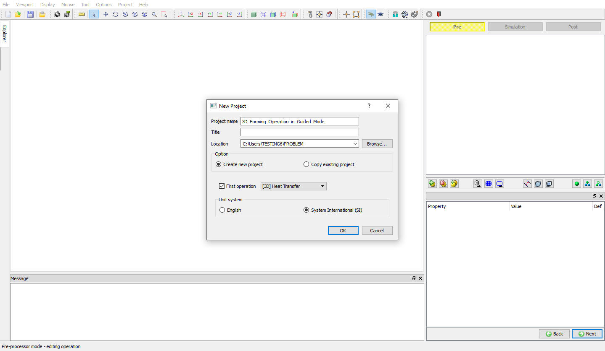
MO Wizard New Project Opening Window
MO wizard will opens new project with one 3d Heat transfer operation. Add one Forming operation for "Steering Link" by clicking  button as shown in Fig. 3DFGL1.3.
button as shown in Fig. 3DFGL1.3.
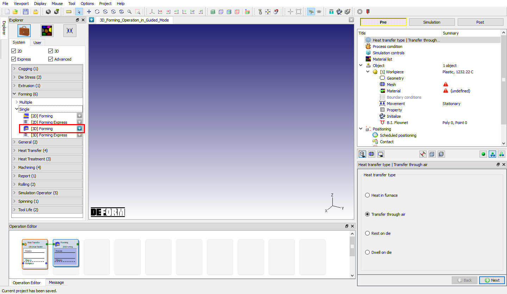
Adding Forming Operation
For first heat transfer operation change the operation name as "Air Transfer" by double clicking on Operation name in Operation Editor window as shown in Fig. 3DFGL1.4. and press Enter in Keyboard.
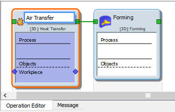
Name the first operation as Air Transfer
Select "Transfer through air" heat transfer type for Air Transfer operation as shown in Fig. 3DFGL1.3. This will set the default heat transfer settings for heating operation. Click on  to continue.
to continue.
Define Transfer time as 4 sec at 20°C environment temperature and default convection coefficient as shown in Fig. 3DFGL1.5. and click on  to continue.
to continue.
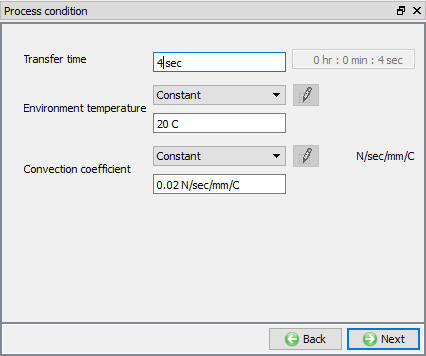
Process Condition settings for air transfer
Keep only Heat Transfer mode checked as only heat transfer is modeling as shown in Fig. 3DFGL1.6. User can use Simulation controls expert mode ( ) for advanced features. As in this lab we are not using any such features click on
) for advanced features. As in this lab we are not using any such features click on  to continue.
to continue.
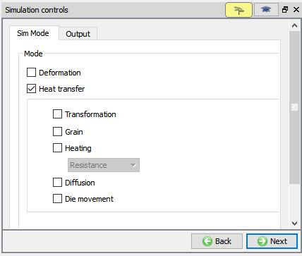
Simulation Controls settings for air transfer in guided mode
In Material window, load the material 'DIN-41Cr4[1450-2200F(800-1200)]' from DEFORM Material library, from Steel category using  (Load
material data from library) option. This can be done as shown in Fig. 3DFGL1.7. by clicking on
(Load
material data from library) option. This can be done as shown in Fig. 3DFGL1.7. by clicking on
 button. Material can also be load from Materials list in Explorer. Then click on
button. Material can also be load from Materials list in Explorer. Then click on  for Material and Object window, as only
Workpiece heat transfer in air is our interest in air transfer operation.
for Material and Object window, as only
Workpiece heat transfer in air is our interest in air transfer operation.
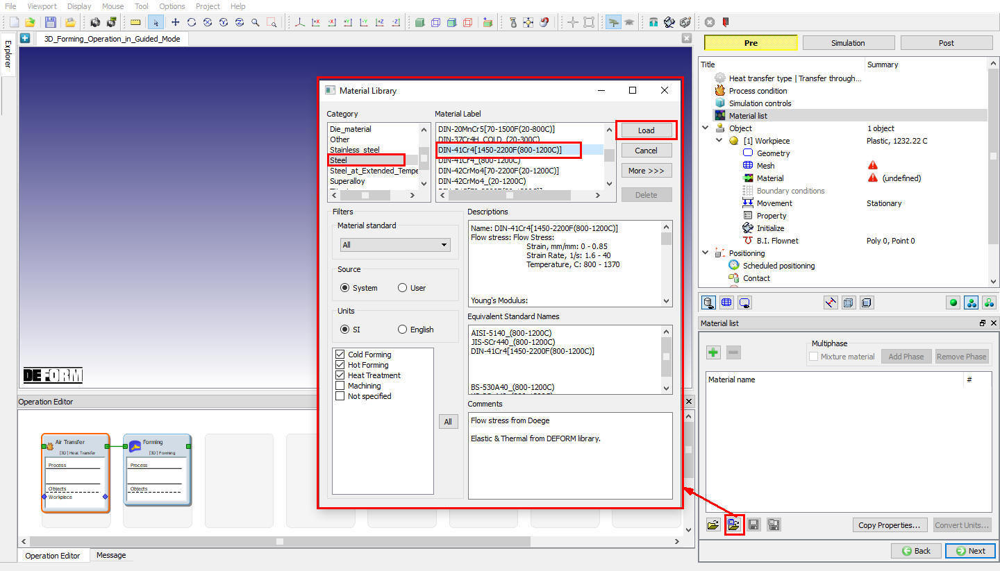
Importing Workpiece material from DEFORM library
In Workpiece object window keep the object type as ‘Plastic’ and specify workpiece temperature as 1300°C (see Fig. 3DFGL1.8.).
Click on  to continue and import the workpiece geometry.
to continue and import the workpiece geometry.
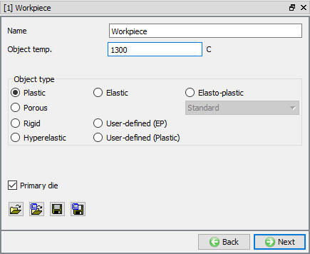
Workpiece Object definition
In Geometry page, using  (Load Geometry from Library) button import ‘ids_link_billet.stl' from installation path /3D/LABS/ as shown in Fig. 3DFGL1.9. Primitive geometry creation option also available at this stage to create the geometry.
(Load Geometry from Library) button import ‘ids_link_billet.stl' from installation path /3D/LABS/ as shown in Fig. 3DFGL1.9. Primitive geometry creation option also available at this stage to create the geometry.
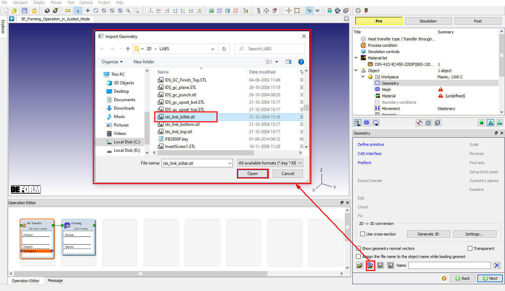
Importing geometry for workpiece
After importing any geometry click on  button to check the geometry, geometry checking window will appear which gives a summary of the object’s geometry (see Fig. 3DFGL1.10.).
For an object that has a closed volume, there should be 1 surface, 0 free edges, and 0 invalid entities. Objects that are imported as surfaces and not solids will have a free edge but should still only have 1 surface.
button to check the geometry, geometry checking window will appear which gives a summary of the object’s geometry (see Fig. 3DFGL1.10.).
For an object that has a closed volume, there should be 1 surface, 0 free edges, and 0 invalid entities. Objects that are imported as surfaces and not solids will have a free edge but should still only have 1 surface.
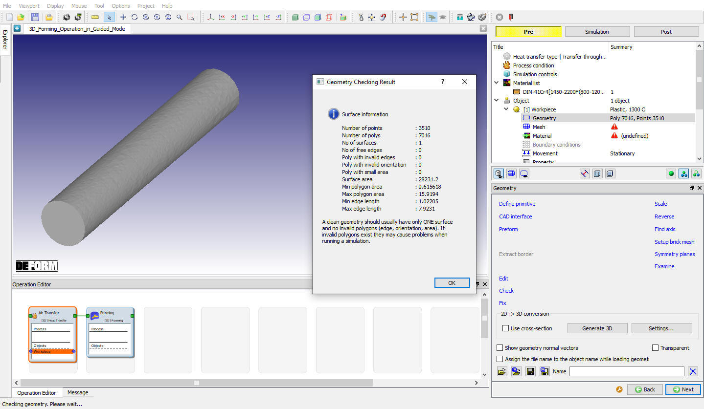
Checking the imported 3d geometry
Generate the mesh using 32000 elements (see Fig. 3DFGL1.11.). Complete range of meshing options are also available
in expert mode ( ), if user needs to have more control on the mesh generated. Click on
), if user needs to have more control on the mesh generated. Click on  to continue.
to continue.
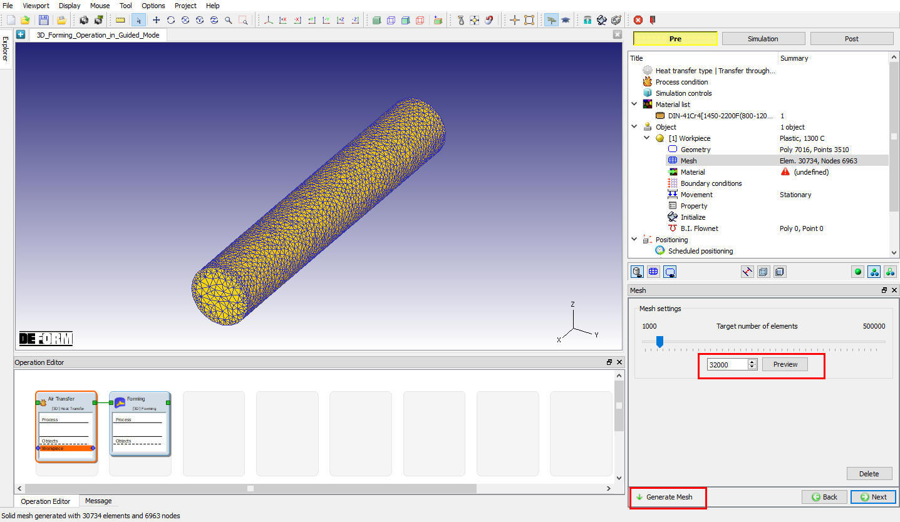
Mesh generation for workpiece
To assign material for workpiece select the material ‘DIN-41Cr4[1450-2200F(800-1200)]’ from material window. This can be done as shown in Fig. 3DFGL1.12. Click on  to continue.
to continue.
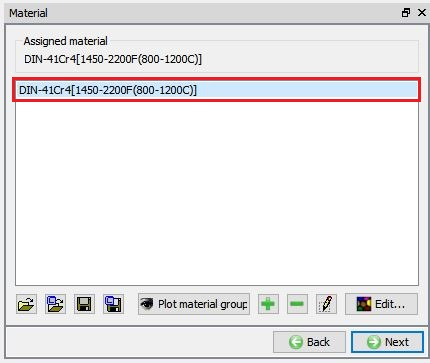
Assigning material for workpiece
In BCC page, check the default assigned Heat exchange with Environment BCC to the entire outer surface of the Billet, but in this lab we are modeled half of the steering link. So to enforce symmetry, we need to define a symmetry plane boundary condition to the +X end of the part and heat exchange with the environment boundary condition to all surfaces except the +x end of the part.
Add the Symmetry BCC to the +X end plane of the part by selecting the plane using selection options on left side BCC tool bar and clicking on  (Add BCC) button, after adding select symmetry plane vectors appears under Symmetry Planar as shown in Fig. 3DFGL1.13.
to ensure the correct definition of BCC.
(Add BCC) button, after adding select symmetry plane vectors appears under Symmetry Planar as shown in Fig. 3DFGL1.13.
to ensure the correct definition of BCC.
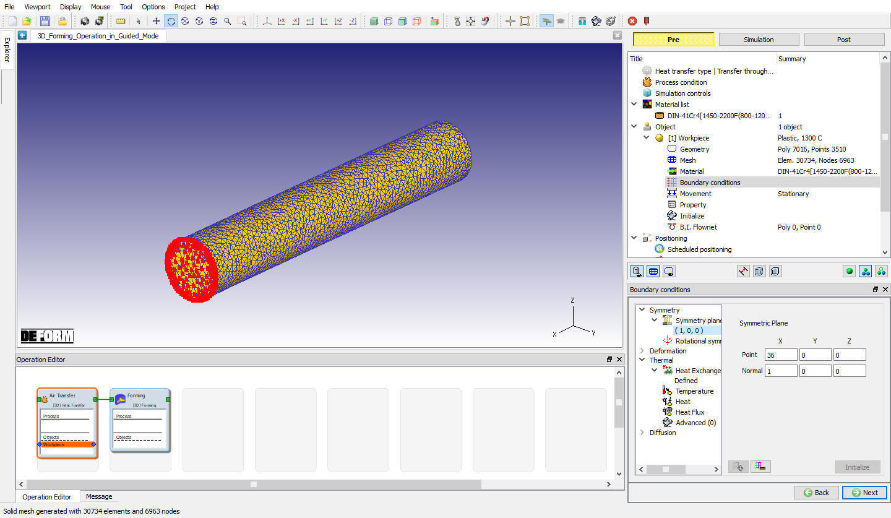
Symmetry boundary condition definition for workpiece
Delete the automatically defined heat exchange with environment BCC by selecting the Defined branch under Heat exchange with environment and clicking on (Delete BCC) button. Then
for heat exchange with environment bcc select the entire object part except symmetry plane using selection options on left side BCC tool bar and clicking on  (Add BCC) button. Select
the Defined branch to confirm the BCC definition as shown in Fig. 3DFGL1.14.
(Add BCC) button. Select
the Defined branch to confirm the BCC definition as shown in Fig. 3DFGL1.14.
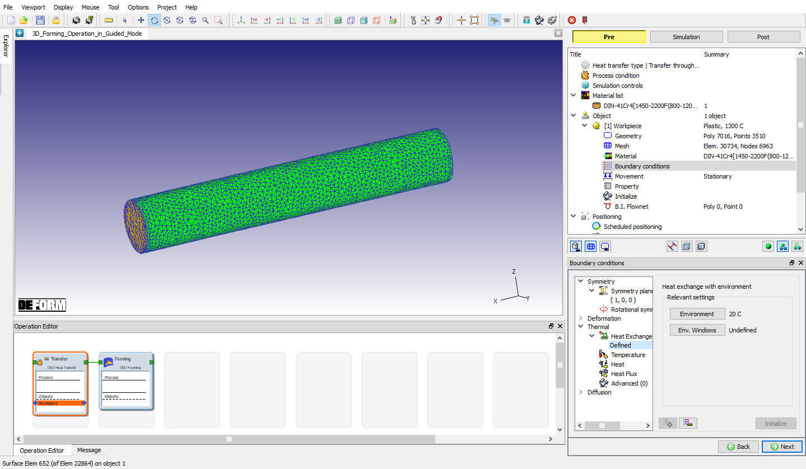
Boundary condition definition for workpiece
Click on  until Step controls window as there is no object positioning and thermal stopping controls definition is required.
until Step controls window as there is no object positioning and thermal stopping controls definition is required.
Set the number of simulation steps as 50 at 0.1 sec each and saving every 5 steps (see Fig. 3DFGL1.15.).
Advanced Simulation controls settings are available in expert mode ( ). Click on
). Click on  to proceed to the database generation
stage.
to proceed to the database generation
stage.
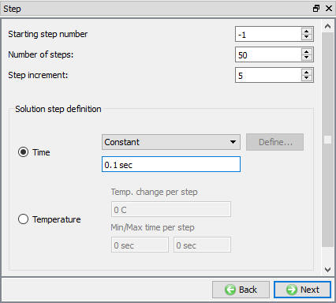
Simulation controls settings for air transfer
In the database generation stage user can check the data required for the analysis and proceed to generate the database (see Fig. 3DFGL1.16.).
First operation of any multiple operations, user is required to generate the database. For all the subsequent operations we only need to setup the process data and simulation controls. Click on  to proceed to the next operation ‘Cone Forming".
to proceed to the next operation ‘Cone Forming".
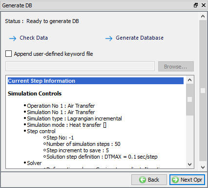
Database generation window for first operation
The Forming operation runs till distance between dies reaches 400.8 mm. As workpiece is coming from air transfer operation with its thermal history, make workpiece as read from DB object and add other two objects for Top and Bottom Die to setup the steering link forming operation.
Name the operation as 'Steering Link' by double clicking on Operation name in Operation Editor and press Enter from Keyboard to close.
In simulation controls check both Deformation and Heat transfer simulation modes as shown in Fig. 3DFGL1.17. Click  until objects window to add objects as we are not simulating the die's thermal calculations and need not to define any material for dies.
until objects window to add objects as we are not simulating the die's thermal calculations and need not to define any material for dies.
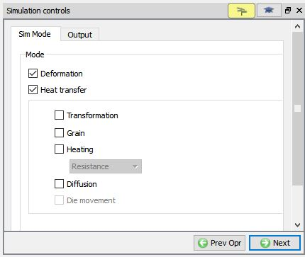
Simulation control settings for forming
In Object window add number of objects as 3 as shown in Fig. 3DFGL1.18., as we will be bringing in all two dies at 90°C
for the forming operation. We can now see the object tree is expanded to include the dies, details for which will be now be defined. Click  to continue.
to continue.
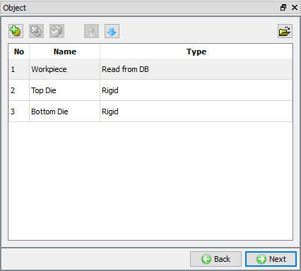
Adding objects for forming
In workpiece definition window select the object type as "Read from DB" as shown in Fig. 3DFGL1.19. Click on Top Die in operation tree to define the Dies.
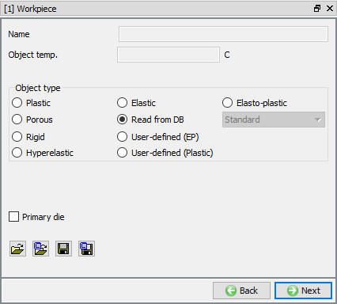
Workpiece definition window in forming
In Top die definition window accept the object type as rigid and specify initial temperature as 90°C as shown in Fig. 3DFGL1.20. Click  to continue.
to continue.
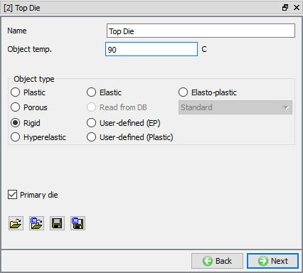
Top die definition window in forming
In Top die Geometry window, click on  (Load Geometry from Library) button and import ‘Ids_link_top.stl' from DEFORM geometry library path
/3D/LABS/ (see Fig. 3DFGL1.21.). Check the imported geometry as explained for workpiece geometry earlier.
Click on
(Load Geometry from Library) button and import ‘Ids_link_top.stl' from DEFORM geometry library path
/3D/LABS/ (see Fig. 3DFGL1.21.). Check the imported geometry as explained for workpiece geometry earlier.
Click on  until top die movement window.
until top die movement window.
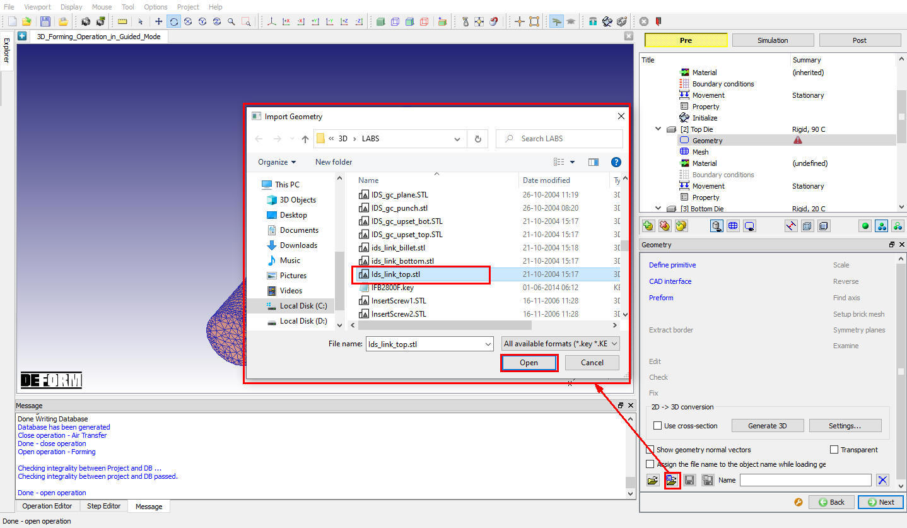
Importing the multiple boundary geometry for top die
In top die movement controls define the hydraulic press with hydraulic speed as function of time (local time) in -Z direction as shown in Fig. 3DFGL1.22.
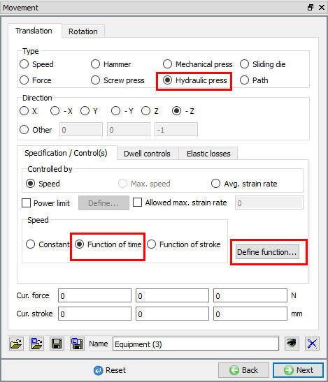
Hydraulic movement definition for top die
Click on button next to speed and define such that from 0 to 2.04 sec press runs with speed is 10 mm/sec and from 2.0401 to 4 sec press runs with 8 mm/sec as shown in
Fig. 3DFGL1.23. By default in multiple operations for function of time definitions local time will be considered so in this function time 0 till 4 seconds referring to
forming operation. Click on  to close the definition and click on
to close the definition and click on  until Bottom die definition window.
until Bottom die definition window.
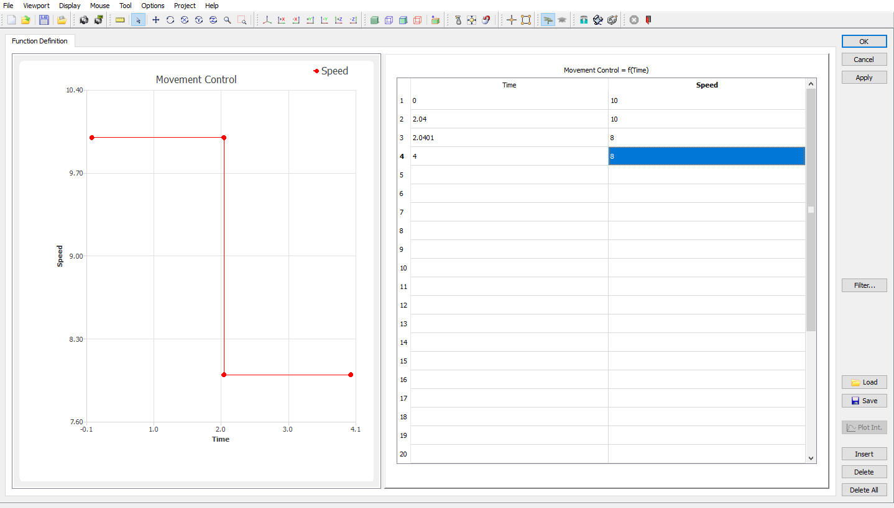
Hydraulic speed defined as function of local time
In Bottom die definition window accept the object type as rigid and specify initial temperature as 90°C as shown in Fig. 3DFGL1.24. Click  to continue.
to continue.
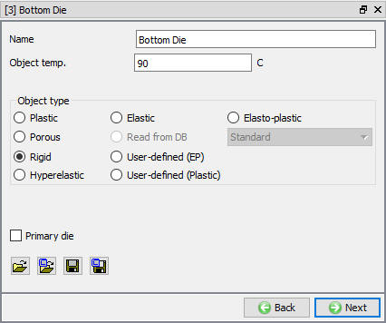
Bottom die definition window
In Bottom die Geometry window, click on  (Load Geometry from Library) button and import ‘ids_link_bottom.stl' from DEFORM geometry library path /3D/LABS/
(see Fig. 3DFGL1.25.). Check the imported geometry as explained for workpiece geometry
earlier. Click on
(Load Geometry from Library) button and import ‘ids_link_bottom.stl' from DEFORM geometry library path /3D/LABS/
(see Fig. 3DFGL1.25.). Check the imported geometry as explained for workpiece geometry
earlier. Click on  until scheduled positioning window.
until scheduled positioning window.
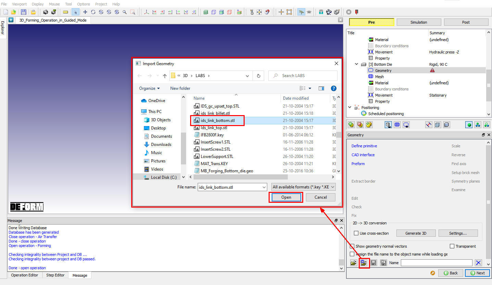
Importing the multiple boundary geometry for bottom die
The dies by default are in correct position, to make sure they positioned properly define the scheduled position to top and bottom die with respect to workpiece by interference method in -Z and + Z direction respectively as shown in Fig. 3DFGL1.26. Click on  to continue.
to continue.
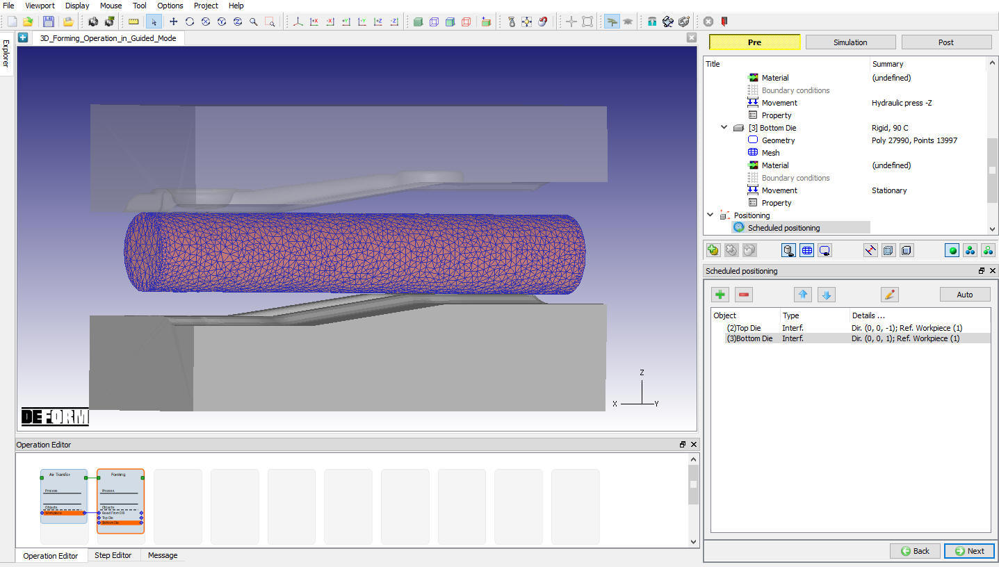
Scheduled positioning for top and bottom dies
Select user type contact and click on  button (see Fig. 3DFGL1.29.).
It will add the relationship between the Billet, Top Die and Bottom Die. As the Dies are Rigid and Billet is plastic, Top and Bottom Dies are considered as Master and Billet as Slave.
button (see Fig. 3DFGL1.29.).
It will add the relationship between the Billet, Top Die and Bottom Die. As the Dies are Rigid and Billet is plastic, Top and Bottom Dies are considered as Master and Billet as Slave.
Highlight the Top Die – Workpiece relationship and click the  button to modify the contact conditions. In the friction tab (see Fig. 3DFGL1.27.)
there is a pull-down menu that allows the user to choose the appropriate friction conditions of common forming processes.
button to modify the contact conditions. In the friction tab (see Fig. 3DFGL1.27.)
there is a pull-down menu that allows the user to choose the appropriate friction conditions of common forming processes.
Since this is hot forming simulation and the dies are steel, use the pull down menu and select Hot forming from the list. A friction value of 0.3 will automatically be selected.
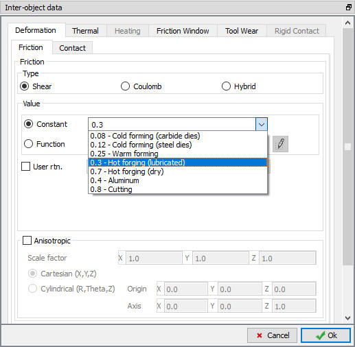
Inter-object friction coefficient definition for hot forging
In thermal tab select the Forming type pull down option, it will add the default heat transfer coefficient value 5 for forming as shown in Fig. 3DFGL1.28.
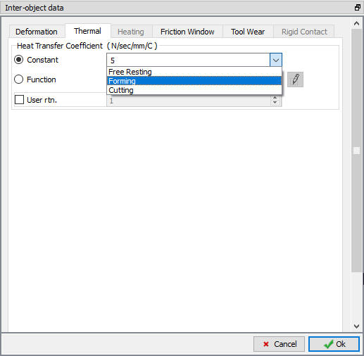
Inter-object heat transfer coefficient definition for forming
Click on  to go back to Inter-Object window, since the friction conditions and inter-object heat transfer are the same for all the object pairs, the
to go back to Inter-Object window, since the friction conditions and inter-object heat transfer are the same for all the object pairs, the  button can be used to copy the interface properties from the first relationship to all of the others. After this is done, all relationships will have a friction factor of 0.3 and heat transfer coefficient of 5 defined as shown in Fig. 3DFGL1.29. Since the contact will initialize and generate while generating database, turn On "Initialize" and "Generate" check boxes. Click on
button can be used to copy the interface properties from the first relationship to all of the others. After this is done, all relationships will have a friction factor of 0.3 and heat transfer coefficient of 5 defined as shown in Fig. 3DFGL1.29. Since the contact will initialize and generate while generating database, turn On "Initialize" and "Generate" check boxes. Click on  to continue.
to continue.
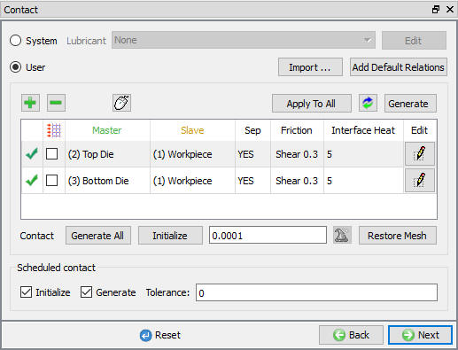
Inter-Object relationship definition for forming
In stopping control window check the Distance between dies stopping control and define distance value as 11.0 mm. Then from display window pick the point on big end, top and bottom die cavity centers and select the
direction as Z as shown in Fig. 3DFGL1.30. After picking points on dies distance
between dies can be observed, in this case its around 51.8. For advanced stopping options are refer Expert mode ( ), as we are not using in this lab click on
), as we are not using in this lab click on  to continue.
to continue.
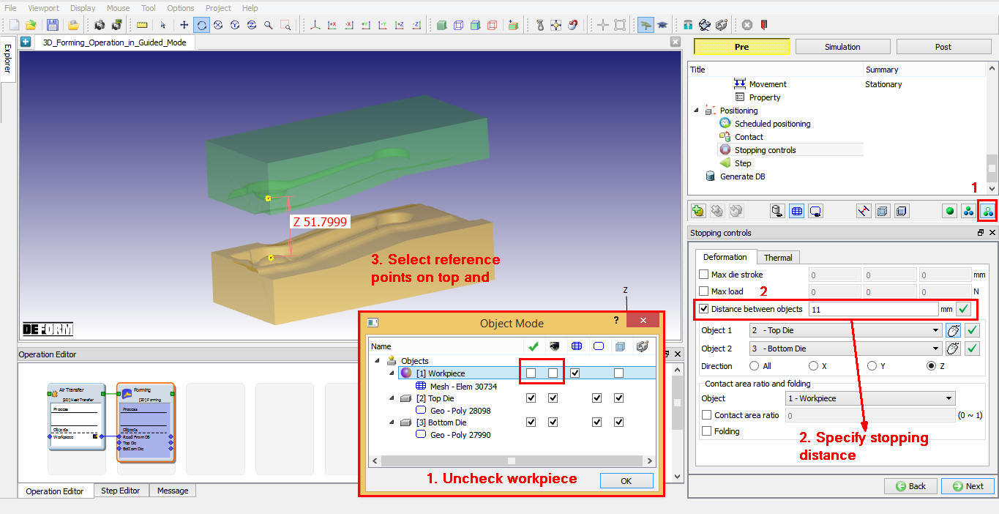
Distance between dies stopping control for forming
In step controls window define number of steps as 500, at 0.2 mm per step of die movement, step increment to save as 10 for the primary die (which is object number 2 in this simulation) as shown in Fig. 3DFGL1.31. Advanced step controls and simulation controls features are available in Expert mode ( ).
).
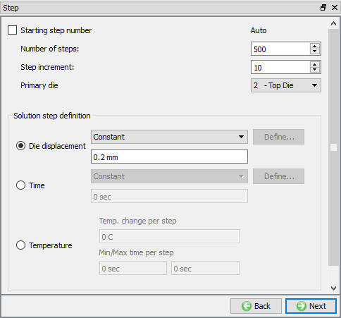
Step controls settings for forming
As database for cone forming operation will generate during simulation, so this completes the multiple forming operation setup in MO - Guided mode. To simulate the problem click on  button above the object tree (see Fig. 3DFGL1.33.).
button above the object tree (see Fig. 3DFGL1.33.).
Click on the  action label to open the Run Options dialog as shown in Fig. 3DFGL1.32. Use
the default Continue Run option to select “Continue from the last step” option and then select the Simulation mode as Interactive and click on
action label to open the Run Options dialog as shown in Fig. 3DFGL1.32. Use
the default Continue Run option to select “Continue from the last step” option and then select the Simulation mode as Interactive and click on  button to run the simulation.
button to run the simulation.
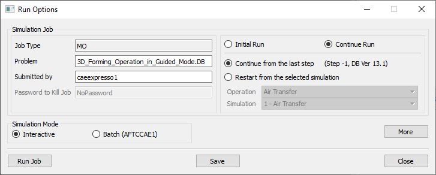
Run Simulation popup window
Monitor the progress of the simulation by looking at the Simulation Graphics, Simulation Message and Simulation Log tab by making sure that the  option is checked. (See
Fig. 3DFGL1.33.)
option is checked. (See
Fig. 3DFGL1.33.)
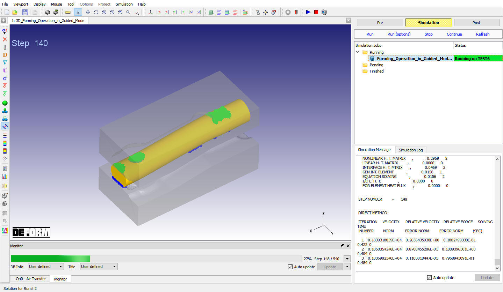
Simulation mode displaying the forming running status
After completion of the all operations in Simulation log file it gives the log message as "MULTIPLE OPERATION COMPLETED.", then switch to Post tab by clicking on  to view
the simulation results.
to view
the simulation results.
In post processor, Step list below the graphic area indicates step numbers available from the different operations simulated. A set of state variables available from the ‘Post’ menu can be used to review the model response. Please note that for the
first operation only the thermal data for the workpiece is available. And the deformation results can be seen for the Steering link forming operation (see Fig. 3DFGL1.34.).
Use the  (zoom by window) icon to zoom the cone portion of the workpiece as shown in Fig. 3DFGL1.34.
(zoom by window) icon to zoom the cone portion of the workpiece as shown in Fig. 3DFGL1.34.
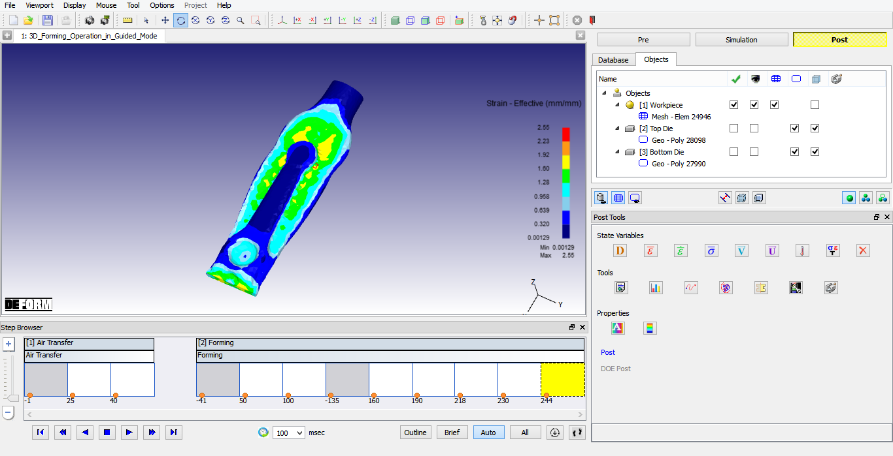
Strain-Effective variable contour at workpiece cone shape
Some important state variables can be selected directly from ‘Post Tools’ window and the rest can be accessed through State Variable dialog by clicking on  icon.
icon.
Click on  Graph (Load-Stroke) and plot Time (sec) vs Load (klb) and also plot Time (sec) Vs Speed (in/sec) for top die. Observe for speed change after 20.4 mm deformation from 10
in/sec to 8 in/sec as shown in Fig. 3DFGL1.35.
Graph (Load-Stroke) and plot Time (sec) vs Load (klb) and also plot Time (sec) Vs Speed (in/sec) for top die. Observe for speed change after 20.4 mm deformation from 10
in/sec to 8 in/sec as shown in Fig. 3DFGL1.35.
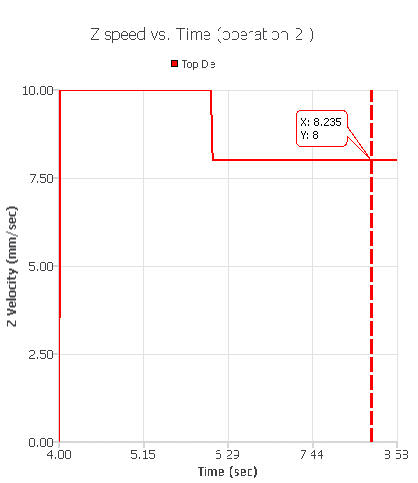
Time vs Load and Time vs Speed plots for primary die (Top die)